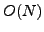
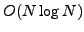

In this talk we introduce a new approach of finding a full eigenbasis of
discretized partial differential equations. The developed method allows
to calculate  eigenfunctions in
 operations,  being
the size of the problem on the finest scale. The approach allows an
extremely efficient use of all intermediate scales,
in particular the coarsest one. There not only all eigenfunctions are
calculated but also the entire orthogonalization process takes place.
being
the size of the problem on the finest scale. The approach allows an
extremely efficient use of all intermediate scales,
in particular the coarsest one. There not only all eigenfunctions are
calculated but also the entire orthogonalization process takes place.
The algorithm determines dynamically when a new set of operators needs to be calculated (to guarantee a required accuracy) as well as a vicinity of eigenvalues for which this set should be accurate. The algorithm is performed in the AMG framework, using prolongation operators each built to accurately interpolate, in the least square sense, a set of test functions, approximations to eigenfunctions with close eigenvalues.
Numerical experiments for the one-dimensional problems will conclude the talk, along with a brief discussion of the approach' extension to two dimensions. Joint work with Achi Brandt.